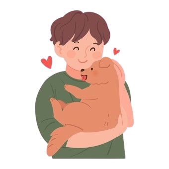

입양동물 상세보기
-
1
홈페이지에서 입양 가능한
반려견 조회 -
2
해당 반려견을 찜목록에 등록
하거나 상세 페이지에서 입양신청 -
3
보호소의 확인 후
개별 연락 대기 -
4
보호소의 절차에 따라
면담 진행 -
5

면담 및 교육 수료 후
정식 입양 완료
-
첫 번째, 강아지의 품종 별 성격을 체크하기
강아지도 사람과 마찬가지로 개성이 있습니다. 강아지의 품종에 따라 운동량, 관심도, 훈련성, 건강 문제 등이 다를 수 있으므로, 자신의 생활 환경과 스타일에 맞는 강아지를 선택하는 것이 중요합니다. 예를 들어, 활동적이고 사람을 좋아하는 품종은 산책과 놀이를 자주 해주어야 하고, 조용하고 차분한 품종은 혼자 있는 시간을 잘 견디도록 해야 합니다. 또한, 강아지의 성격은 품종뿐만 아니라 출생 환경, 유전, 사회화 경험 등에 영향을 받으므로, 입양하기 전에 강아지와 충분히 시간을 보내보고 결정하시길 바랍니다.
-
두 번째, 강아지의 건강 상태를 확인하기
강아지를 입양하기 전에는 반드시 동물 병원에서 건강 검진을 받아야 합니다. 강아지가 가진 질병이나 기생충, 접종 여부 등을 파악하고, 필요한 치료나 예방 접종을 받으세요. 또한, 강아지의 나이와 성별에 따라 중성화 수술을 고려해야 할 시기가 옵니다. 중성화 수술은 강아지의 생식기 관련 질병을 예방하고, 행동 문제를 줄여주는 효과가 있습니다.
-
세 번째, 강아지를 위한 준비물을 구비하기
강아지가 살기 좋은 환경을 만들어주기 위해서는 몇 가지 필수 용품들이 필요합니다. 밥그릇과 물그릇, 사료와 간식, 방석과 집, 산책용 리드와 하네스, 배변패드와 배변봉투, 미용 용품과 장난감, 간식 등이 대표적입니다.이 외에도 강아지의 품종과 크기, 나이와 성격에 따라 필요한 용품들이 다를 수 있으므로, 미리 알아보고 준비하세요.
-
네 번째, 강아지의 적응 기간을 존중하기
강아지가 새로운 집에 도착하면 처음에는 불안하고 두려워할 수 있습니다. 그러므로, 강아지가 집에 적응하는 데 필요한 시간과 공간을 주세요. 가능하면 입양하기 전에 분양처에서 사용하던 물건들을 가져와서 친숙한 냄새를 제공해 주세요. 또한, 가족 구성원들과 다른 반려동물들을 점진적으로 소개해 주고, 너무 많은 자극이나 스트레스를 주지 않도록 하세요. 분양 후 1~2주 정도는 훈련이나 산책보다는 집에 익숙해지는 것을 우선으로 하세요.
-
다섯 번째, 강아지의 훈련과 사회화 훈련 시키기
강아지가 행복하고 건강하게 성장하기 위해서는 훈련과 사회화가 필수적입니다. 훈련은 강아지에게 기본적인 명령어와 매너를 가르쳐 주고, 보호자와의 유대감을 강화해 주는 역할을 합니다. 사회화는 강아지에게 다양한 사람과 동물, 환경에 적응하고, 불안하거나 공격적이지 않도록 도와주는 역할을 합니다. 강아지의 훈련과 사회화는 적절한 시기와 방법이 중요하므로, 미리 공부하거나 전문가의 도움을 받으세요. 훈련을 시키지 않는다면 티비에 나오는 무는 강아지, 아무 곳에서 나 배변 실수하는 강아지가 될 것입니다.